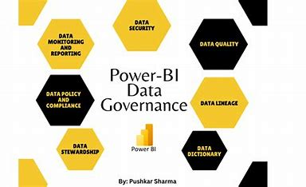

Power BI Security and Governance
Power BI, Microsoft’s leading business intelligence platform, offers
robust security and governance features to protect your data and empower
users with controlled access. Power BI security refers to a set of
processes, policies, and standards that organisations put in place to
manage and control the use of Power BI. Governance is critical to ensure
that the use of Power BI is aligned with the organisation’s objectives
and strategy, complies with relevant regulations and standards, and
protects sensitive data.
Security Features
Power BI's security features include row- and column-level security,
cloud access security, information protection, and unified endpoint
management. Understanding user roles, permissions, authentication,
and data encryption as well as harnessing these controls will
fortify your Power BI environment against potential threats.
Governance Strategy
When considering data governance in any organization, the best place
to start is by defining a governance strategy. By focusing first on
the strategic goals for data governance, all detailed decisions when
implementing governance policies and processes can be informed by
the strategy.
Security Best Practices
Implementing best practices for Power BI security is crucial to protect
your data and ensure compliance. These practices include setting up
row-level security, using secure embed codes, and regularly auditing and
monitoring Power BI usage.

Row-Level Security
Row-Level Security (RLS) in Power BI allows you to restrict data
access at the row level based on user roles. It is a crucial
feature for organizations that need to secure data based on the
user's role or team.
Secure Embed Codes
Secure embed codes provide a way to share Power BI reports and
dashboards securely. They are a simple and effective way to share
insights while maintaining control over who can see the data.
Audit and Monitor
Regularly auditing and monitoring Power BI usage helps to identify
potential security risks and ensure compliance. Power BI provides
built-in tools for auditing and monitoring, making it easier to
manage security.
Governance in Power BI
Governance in Power BI involves managing and controlling the use of
Power BI within an organization. It includes setting up policies and
procedures, managing data sources, and ensuring compliance with
regulations.
Policies and Procedures
Setting up policies and procedures for Power BI usage helps to
ensure that users are using the tool in a way that aligns with the
organization's objectives. This includes defining who can use Power
BI, what data they can access, and how they can share reports.
Data Management
Managing data sources in Power BI is a key aspect of governance.
This includes ensuring that data is accurate, up-to-date, and comes
from trusted sources.
Compliance
Ensuring compliance with regulations is a crucial part of Power BI
governance. This includes complying with data protection
regulations, such as GDPR, and industry-specific regulations.
Benefits of Power BI Security and Governance
Implementing strong security and governance in Power BI has several
benefits. It helps to protect sensitive data, ensure compliance, and
empower users with controlled access.

Power BI's robust security features help to protect sensitive data
from unauthorized access. This is crucial for organizations that
handle sensitive data, such as financial data or personal
information.
Data Protection

Governance in Power BI helps to ensure that the use of the tool
aligns with the organization's objectives. It also helps to ensure
compliance with regulations, which is crucial for organizations in
regulated industries.
Alignment and Compliance

By implementing strong security and governance, organizations can
empower users with controlled access to data. This allows users to
gain insights from data while ensuring that sensitive data is
protected.
Empowered Users
Secure Your Power BI Today
Implementing strong security and governance in Power BI is crucial for
protecting your data and ensuring compliance. Contact us today to learn
how we can help secure your Power BI environment.
CONTACT US